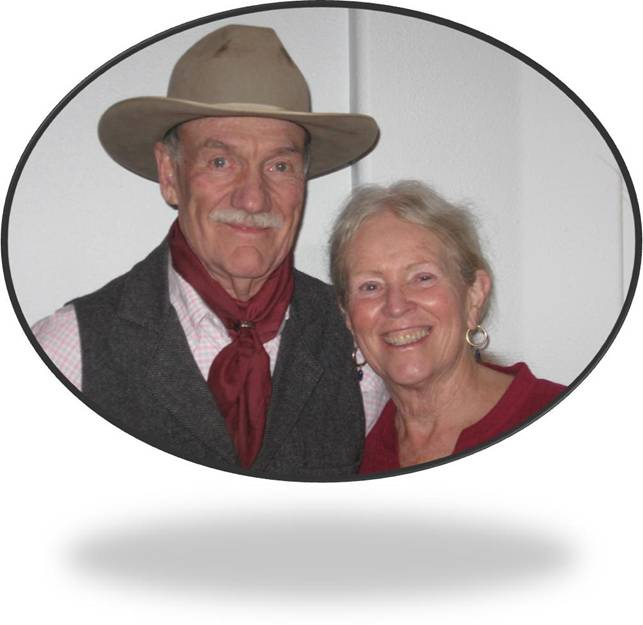

July 4, 2020
Spring Break The end of February was so bleak, brown, eaten down, beaten down, laid over, pressed flat, no apparent life loitering anywhere, even in the spaces we have left for it. Dirty November snowdrifts, glaciated, still lingering in windbreak shadows, the lone coyote crossing the still frozen lake searching for a boney turd or duck carcass. Blackbirds, Finches, Sparrows and Juncos resorting to feeders and pilfered hen-scratch.
July 4, 2020
Then comes word of a greasy pandemic slowly back-stroking in our direction! Gratefully, the five-syllable hoot of nested Great Horned Owls brings us back from a moment of depression.
July 4, 2020
The ever- lasting creation has its own agenda, its own direction in mind as March, calendar of cold wind and rain-snow mixes and blessed intermittent sun - finally begins to remind us. It starts as some celestial commander gives the order. “All geese must fall out of formation and pair up – huuup!” Hearing this, a forgivably heartless Bald Eagle heads for a tree-top perch looking for cripples that lack the protective cover of flock or mate.
George Wallace and Nancy, Larimer County, Colorado USA
A few days in, come squadrons of acrobatic Teal on green, blue and cinnamon wings - such daring stealthy fighter pilots. Soon thereafter, even the hard of hearing note the unmistakable deep, rasping, ancient call of Sandhill Cranes, heard before they are seen. One strains to see the long high formations moving North, sometimes circling elegantly to scout for feed, refuge, or like kind, - or perhaps just to slow dance, show off a little.